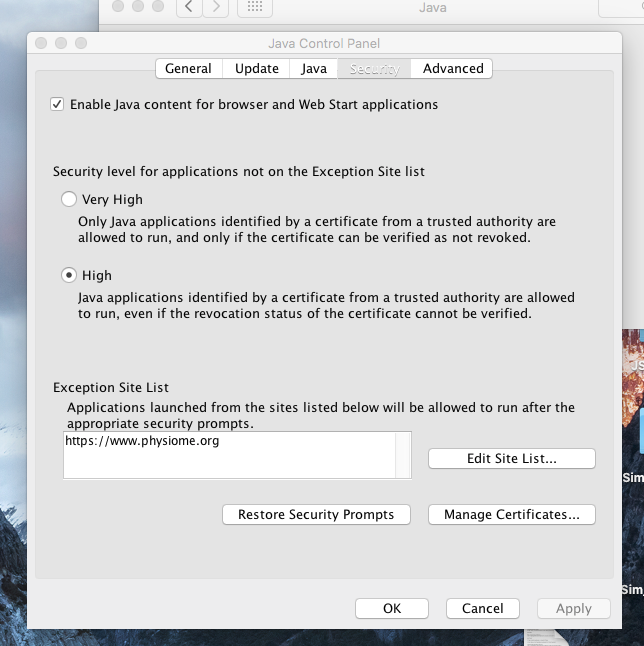
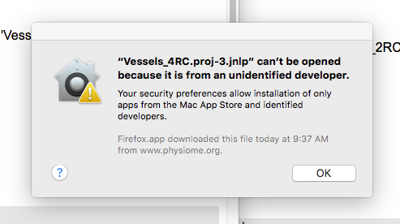
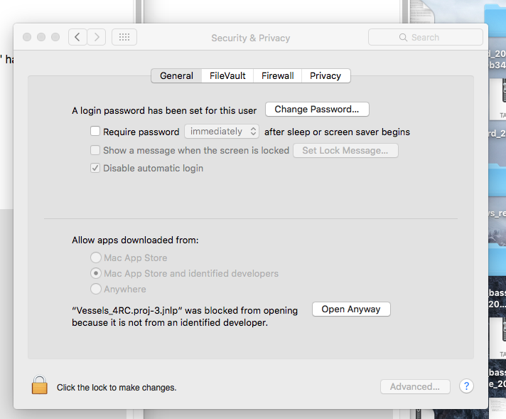
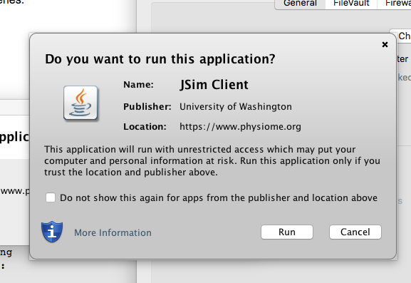
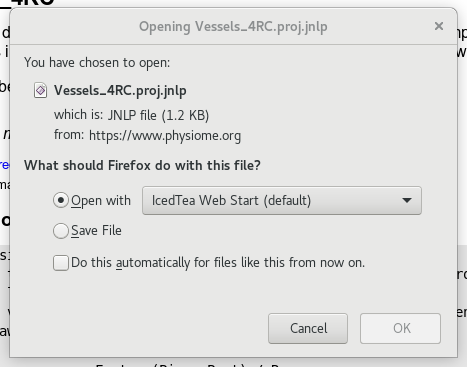
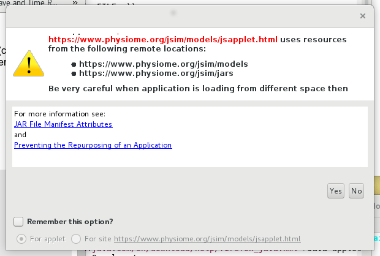

With the limited support for Java applets in browsers, JSim now makes use of Java Web Start technology to run models on your computer. A user downloads a model.jnlp file which gives the local Java installation information about what files need to be loaded and run. To do this, your computer must have Java installed. This page provides configuration information for many common platforms. For more information about JSim, see the JSim Home Page .
When starting JSim you may see a Java security warning message. Java will not run the Java Web Start file unless an exception is manually added. To do this:
Go to the Java Control panel (In MS Windows it is under Java -> Configure Java). Select the 'Security' tab and at the bottom should be a place to add a website to the exception list. Add 'https://www.physiome.org' to the list. Restart the browser and go to the JSim model page. The JSim model should start up after downloading and executing the JSim WebStart file.
Apple MacOS Java Control Panel:
Specific configuration information:
Users with additional or updated information to share regarding Java Web Start and JSim compatibility with different browsers should contact us.
Configuration for Windows 10 and Windows 7:
Mac OS 10.10+ "Yosemite" and higher supported. Java must be installed.

It is necessary to go to the security panel of the OS and enable:

Click the 'Open Anyway' button to allow the file to be run by Java.
Java should then load the file with one final confirmation that you want to run it:

Clicking 'Run' should launch JSim with the model loaded, ready for anaylsis.
Tested on CentOS 7


Clicking 'Run' should launch JSim with the model loaded, ready for anaylsis.